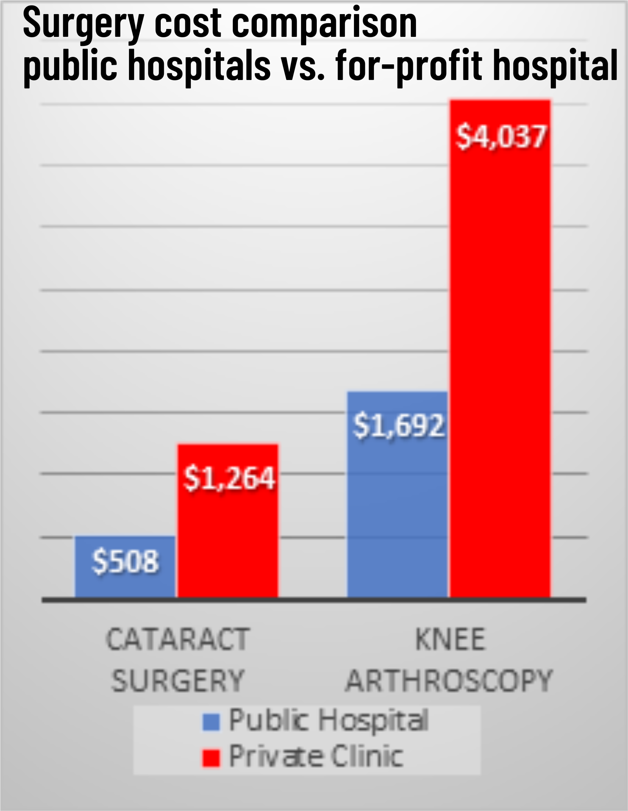

Public hospitals’ operating rooms idle while patients wait
Our public hospitals’ operating rooms are closed evenings, weekends—some even permanently. They aren’t given enough funding to run full time, which would reduce waitlists.
Ontario’s hospitals are being starved, closed, and sold off—while billions flow to for-profit clinics. Stand with us.
Our public hospitals’ operating rooms are closed evenings, weekends—some even permanently. They aren’t given enough funding to run full time, which would reduce waitlists.
Ontario had more than 1,100 emergency department closures last year. Local hospitals, in existence for 100 years, are now at risk of permanent closures. If the Ford government chose, they could restore services by funding & staffing our public hospitals.
Ontario funds our public hospitals at the lowest rate of any province. At the same time, the Ford government is redirecting more than a billion dollars per year from our public taxes to fund private for-profit clinics & staffing corporations.
Maureen was charged $7,000 for eye surgery at a private clinic. Medically needed care must be covered by OHIP—not illegal fees. If you’ve been charged, please contact us.
In 1990, Ontario had 50,000 beds for 10.3 million people. Today, only 35,000 for 16.2 million. Per OECD data, only Chile & Mexico have fewer beds per person.
The U.S. has the most privatized health care in the developed world. Americans pay almost double our costs. Medical costs are the top reason for bankruptcy—56 million Americans struggle with medical debt, more than Canada’s entire population.
“Being a senior on a fixed income, I’m still trying to catch up with my bills from the surgery.”
— Maureen, charged $7,000 at a private clinicPublic funding cut. Private profits expanded. The evidence is clear.

Under the Canada Health Act, user fees and queue jumping are illegal—OHIP covers all medically needed care. Patients face record illegal fees in Ford’s privatized clinics, and the government is expanding them.

Every service that has been cut has been privatized—it’s the plan. If Ontario met average provincial funding, services would improve and stay publicly owned.
Ontario Health Coalition calculations from CIHI, 2024
For-profit long-term care corporations have benefitted from billions in Ford government contracts rather than building homes under public and non-profit control.
From the Toronto Star: “Southbridge brought in lobbyists from Earnscliffe—including Alanna Clark from Caroline Mulroney’s office… Arch Capital hired Carly Luis, a long-time PC staffer… Kailey Vokes, Doug Ford’s former director of policy… Melissa Lantsman, who ran Ford’s war room in 2018, lobbied for Extendicare.”
Media reports & evidence:
The Ford government’s former Health Minister became a lobbyist for a for-profit hospital corporation. Funding increased 278%; they pay more than double per surgery than local public hospitals.
Distribute leaflets, sign the petition, and join your local Health Coalition.